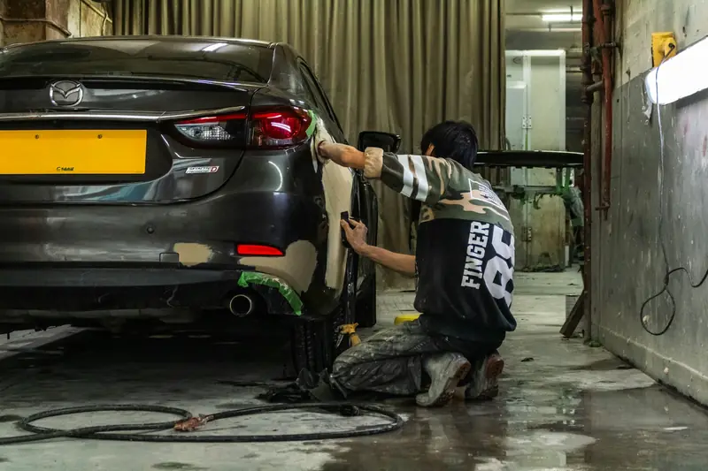

Group 01 / 02
Dent, Panel and Bumper Repair
These services fix everyday damage while keeping as much original material as possible.
5 servicesA bumper can look perfect and still hide a bent bracket or a radar aimed at the wrong lane. We measure, repair and recalibrate until your Mercedes is right inside and out, because we won’t hand back a car that only looks fixed.

Some body damage is obvious. Some only shows up in panel gaps, warning lights or how the car drives.
Hidden riskUsually cosmetic
Book when convenientHidden riskBroken clips, sensor or bracket damage
Book soonHidden riskShifted mounts or structural damage
Book nowHidden riskBent hinges or frame damage
Book nowHidden riskSensor misaligned or damaged
Book nowHidden riskRadar or camera out of calibration
Book now and drive with careHidden riskCorrosion starts at the exposed edge
Book soonHidden riskSuspension or chassis damage
Book nowUAE roads are getting busier. Major accidents rose 23% to 6,014 cases in 2025, and in Abu Dhabi alone the economic cost of minor and major accidents reached AED 5.2 billion last year. Sudden swerving, distracted driving and tailgating caused almost half of all serious crashes.
Many of these impacts look minor. But a parking knock can crack a bumper bracket, shift a radar sensor or bend a crash box behind the cover. Left alone, the panel may rattle, water can get in and safety systems may not work as designed.
Bare metal also corrodes. Once paint is broken through, humidity and coastal air in Abu Dhabi start corrosion at the edge of the damage. Early repair keeps it small and cheaper.
UAE roads in 2025
From a small door ding to a full collision repair, we restore your Mercedes to factory shape and function.
These services fix everyday damage while keeping as much original material as possible.
5 servicesSmall dents with intact paint can often be massaged out from behind the panel. This keeps the factory finish and usually takes only a few hours.
Ask about thisLarger or creased dents are reshaped, prepared and refinished. We restore the body lines so the panel matches the rest of the car.
Ask about thisWe repair cracks, scuffs and broken mounts, or replace the bumper when repair isn’t safe. Sensors, brackets and clips are checked before the bumper goes back on.
Ask about thisWe repair or replace these panels and adjust hinges and latches. Gaps are set evenly so every panel opens, closes and seals properly.
Ask about thisWe repair grilles, wheel arch liners, mirror covers and trim pieces. Damaged clips and fixings are replaced so nothing rattles later.
Ask about this
These services restore the strength and safety systems behind the panels.
5 servicesWe strip the damaged area, find every affected part and repair it in the right order. Mechanical and electrical damage found along the way is reported to you first.
Ask about thisWe measure the body against Mercedes reference points and pull it back into position. Correct geometry keeps wheel alignment, panel gaps and crash protection right.
Ask about thisMany Mercedes bonnets, wings, doors and boot lids are aluminium. We repair them with separate tools and methods, since aluminium reacts differently to heat and pressure than steel.
Ask about thisWe fit glass that matches your car’s specification, including camera and sensor mounts. The front camera is then calibrated so lane and collision systems work correctly.
Ask about thisAfter bumper, glass or structural work, we check and calibrate radar, cameras and parking sensors. This restores Distronic, Active Brake Assist and lane assist to their designed accuracy.
Ask about thisA Mercedes body is not a single material. It’s a careful mix chosen for strength and low weight. The 2021 S-Class body, for example, uses more than 50% aluminium, combined with high-strength steel in key areas. Each material needs its own repair approach.
Heating high-strength steel can weaken it, and aluminium can corrode if it touches steel particles. This is why a generic body shop approach can quietly reduce crash protection.
Modern Mercedes models use cameras, radar and ultrasonic sensors behind the windshield, grille and bumpers. These feed systems such as Distronic, Active Brake Assist and Active Lane Keeping Assist.
Precision matters. If a camera or radar sits even a few degrees off, its view hundreds of metres ahead can land in the wrong lane. Mercedes requires the front camera to be calibrated after a windshield replacement, and radar may need calibration after a bumper is removed and refitted, even if the sensor itself wasn’t damaged.
Most sensors can’t tell you when they’re slightly out of line. That’s why we check and calibrate them as part of the repair, not as an optional extra.
Here’s how we typically handle common damage and how long it usually takes.
Times depend on parts availability and the extent of hidden damage. We confirm the timeline with your quote. For colour matching and full resprays, our Mercedes painting team takes over the finish.
We repair original panels where it’s safe, because factory panels fit and seal best. Here’s how we decide.
Repair without repainting
Repair if it can be restored safely, otherwise replace
Plastic repair and refinish
Replace
Replace at approved joints
Strip back and redo properly
If your Mercedes is damaged in an accident, your insurance policy decides where it can be repaired. UAE comprehensive policies come with one of two repair options.
Under a non-agency policy, your insurer sends the car to an approved workshop. Bring your police report, policy details and any insurer instructions, and we’ll guide you through the next steps. Approval and cover always depend on your insurer and policy.
Mall car parks cause many door dings and bumper scuffs.
Low parking pillars and kerbs are a common cause of bumper damage.
Tailgating caused 14% of serious UAE accidents in 2025.
Stones and debris from construction vehicles chip paint and crack glass.
Bare metal starts to corrode quickly in humid, coastal air.
PPF on the bumper and bonnet guards against chips and light scuffs.
Five clear steps, the same on every job, so you always know what is happening and why.
We examine the damage, remove panels where needed and scan for sensor faults. Hidden damage is found before we quote.
You get a clear quote covering parts, labour, refinishing and calibration. Nothing starts without your approval.
We repair or replace panels and structure using the right method for each material. Body measurements confirm the geometry is correct.
Panels are prepared, painted and blended to match your car. Gaps, seals and trim are refitted and adjusted.
We calibrate sensors, scan for faults and road test the car. You receive a final inspection report at handover.
MOIAT-certified, Mercedes-focused and rated 4.5 from 765 Google reviews. Here is what that means for your car.
Our technicians know where Mercedes uses aluminium and high-strength steel. They choose the right repair method for each part of the body.
We remove panels and check brackets, mounts and sensors before quoting. This avoids surprise costs halfway through the repair.
Collision repairs are checked against Mercedes body reference points. Your car returns with correct geometry and even panel gaps.
Calibration is built into every bumper, glass and structural repair that needs it. Your driver assistance systems work as Mercedes designed them.
We repair factory panels when it’s safe to do so. When replacement is the better option, we explain why.
You see parts, labour, paint and calibration as separate lines. If anything changes during the repair, we call you first.
It depends on the damage, parts and finish. A paintless dent repair costs far less than a bumper replacement or structural collision repair. Send us photos for an initial estimate, and we’ll confirm the price after inspection.
Small dents can take a few hours, and bumper repairs one to two days. Collision repairs usually take one to four weeks, depending on damage and parts.
Yes. Bring your police report and policy details, and we’ll guide you through the process. Whether your insurer approves the repair at our workshop depends on your policy type and insurer.
Often, yes. If the paint isn’t cracked and the dent isn’t sharply creased, paintless dent repair can restore the panel and keep the factory finish.
A proper repair with correct panel gaps, matching paint and calibrated sensors keeps the impact low. Poor repairs are easy to spot in a pre-purchase inspection and hurt resale far more.
Yes. We check and calibrate cameras, radar and parking sensors after any repair that disturbs them, including bumper and windshield work.
Yes. Aluminium panels are repaired with separate tools and methods. If a panel can’t be repaired safely, we replace it.
 Brake RepairPads, discs, DOT 4 Plus fluid, ABS and AMG brakes.
Brake RepairPads, discs, DOT 4 Plus fluid, ABS and AMG brakes. Transmission Repair7G, 9G-TRONIC and DCT gearbox repair and rebuilds.
Transmission Repair7G, 9G-TRONIC and DCT gearbox repair and rebuilds. Engine RepairTiming chains, head gaskets, leaks, turbos and AMG V8s.
Engine RepairTiming chains, head gaskets, leaks, turbos and AMG V8s. PaintingPaint-code matching, panel paint, resprays and ceramic coating.
PaintingPaint-code matching, panel paint, resprays and ceramic coating. DiagnosticsXENTRY full-module scans, live data and warning lights.
DiagnosticsXENTRY full-module scans, live data and warning lights. Oil ChangeMB 229-approved oil, genuine filters and ASSYST reset.
Oil ChangeMB 229-approved oil, genuine filters and ASSYST reset. Electrical RepairBattery, SAM module, wiring, 48V and lighting faults.
Electrical RepairBattery, SAM module, wiring, 48V and lighting faults. AC RepairR1234yf regas, compressors, leaks and climate control.
AC RepairR1234yf regas, compressors, leaks and climate control.Whether it’s a small dent or a serious collision, your Mercedes deserves a repair that restores its looks, strength and safety systems. Send us photos of the damage or book an inspection today. We serve Mercedes owners across Abu Dhabi, from Mussafah and Khalifa City to Yas and Saadiyat Island.